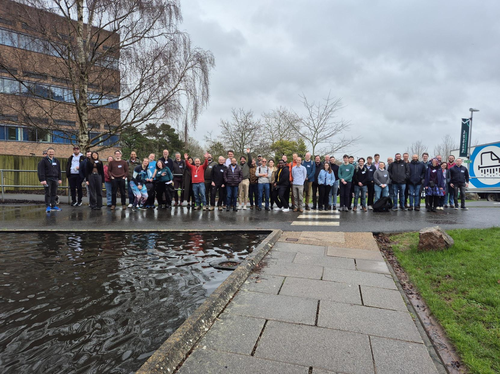

Meeting report — University of Exeter (20 Feb 2026)
The third RSE South West meeting took place at the University of Exeter, bringing together 52 participants from across the region. The programme featured two keynote talks and 12 short talks (5–10 minutes) organised around three themes: “Community and Recognition in RSE”, “Methods, Practices, and Tools” in Research Software, and “Beyond Academia”. The event was funded by the Research Software Engineers Society through their Events & Initiatives Grant, and we would like to extend a big thank you for their support.

Keynote Talks
We kicked off promptly at 10am with our first keynote speaker, Emma Hogan from the Met Office. Her interactive talk kept the audience engaged while also gathering live insights into people’s views on Scrum and collaboration with research teams.
The second keynote was delivered by Tom Green and Ana Price from Bristol Centre for Supercomputing (BriCS), home to the Isambard-AI and Isambard 3 systems. Their talk explored how modern HPC centres are reshaping roles to bridge systems administration and research software engineering, enabling researchers to work more effectively with increasingly complex software environments.
Community and Recognition in RSE
We then moved into our first session of short talks, themed “Community and Recognition in RSE”. The session highlighted the many ways RSEs build and sustain communities across institutions and disciplines. A presentation on JOSS from Warrick Ball emphasised opportunities for RSEs to take the lead on research software publications and gain recognition for their contributions.
Speakers also introduced several teams and initiatives that support researchers and strengthen the RSE community. We heard about the RSE group at the University of Bath from Stephen Cook, the NERC Earth Observation Data Analysis and AI Service at Plymouth Marine Laboratory from Dan Clewley, and climate services work at the Met Office from Daniel Cubbon.
Michael Pei highlighted the RSE-supported server infrastructure at the Bristol Composites Institute. Nicole Whippey gave an update on the X-Cited and GW4 initiatives from the University of Exeter, both of which aim to foster collaboration and connections across institutions: https://gw4.ac.uk/x-cited/.
Lunch and Walk
We had a buffet lunch in the foyer and common area, which made for great socialising and networking with both new and familiar colleagues. Fortunately, the weather held out, and we were able to get some fresh air with a short walk around the Reed Hall gardens, which were showing the first signs of spring with banks of early spring flowers.
Methods, Practices, and Tools in Research Software
Session 2 featured four fantastic lighting talks focused on “Methods, Practices, and Tools” in Research Software in an action packed 30 minutes!
James Frost (Met Office) opened with a showcase on automatically testing web interfaces with Playwright, highlighting the growing need for reliable, automated UI validation in RSE projects.
Kieren Pitts (University of Bristol) then demonstrated a Telegram bot that delivers seasonal climate forecasts directly to users, illustrating how messaging platforms can simplify the process.
Tom Bending (University of Exeter) discussed efforts to accelerate astrophysical simulations on GPUs, focussing on the challenges of adapting decades‑old CPU‑optimised code and showing some fascinating videos of star cluster formation.
Finally, Fred Wobus (University of Exeter) explored whether an MCP server could serve as a flexible alternative to traditional command‑line clients, which was motivated by a project with Defra.
Beyond Academia
The afternoon saw a session focussing on research software engineering outside of academia.
Jack Feltham from Syngenta spoke about working as a bioinformatician in the life sciences industry. He compared industry and academia, noting that academia often focuses on deep, exploratory work in small groups, while industry work typically involves multiple projects with a stronger emphasis on collaboration.
Jacob Tomlinson from NVIDIA then introduced GPU-accelerated data science with the RAPIDS libraries from the CUDA-X ecosystem. He highlighted how RAPIDS allows Python developers to use GPUs alongside familiar tools such as Pandas and Scikit-Learn without writing CUDA kernels.
Throughout the event, both speakers emphasised that industry is not one monolithic entity and that there is a lot of variety in the work being done, encouraging us to bear this in mind when talking about how things are done in industry vs academia.
The Panel Discussion: Quality and Reproducibility in Academia and Industry
The day concluded with a panel discussion on “Quality and Reproducibility in Academia and Industry”, featuring Emma Hogan (Met Office), Jacob Tomlinson (NVIDIA), Jack Feltham (Syngenta), and Dan Clewley (Plymouth Marine Laboratory), chaired by Kolen Cheung (University of Exeter).
A clear consensus emerged: both academia and industry value quality and reproducibility, but the real challenge lies in balancing practices such as testing, documentation, and reproducibility with delivering results under time pressure. As Emma noted, drawing on Agile principles, the level of investment should ultimately be guided by stakeholder value. Ultimately reproducibility is a matter of degree, and that choosing the appropriate level for a given project is a skill every RSE must develop.
The discussion ended on a thought-provoking note when Jacob observed that much of industry’s open-source work, including GPU-accelerated software at NVIDIA, is developed in the open and subject to public scrutiny, whereas much academic work still happens behind closed doors.
Pub Trip!
Overall, it was a vibrant day, with the talks giving participants plenty to discuss as conversations continued into the pub at The Imperial, conveniently located on the way to Exeter St Davids station.